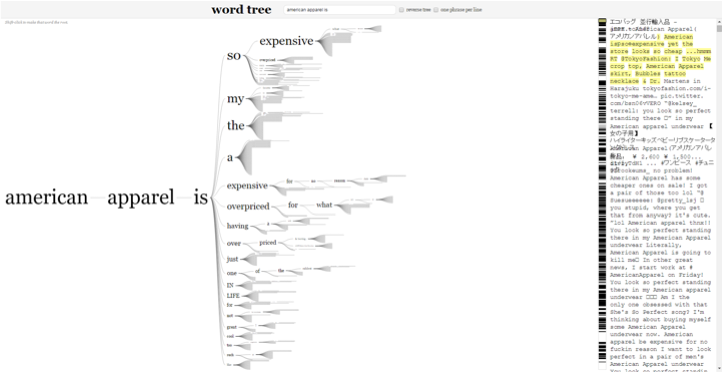
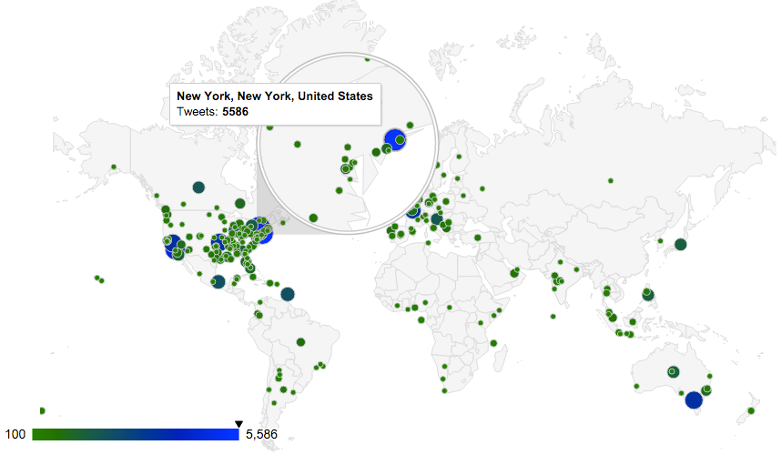

We used R for all correlation and clustering scripts and I used python to do text analysis, natural language processing, and sentiment analysis. The wordle below was built using social media data about AA's products.
I also built another python script to focus on the top social media locations. Our goal was to understand where potential shoppers are. It was interesting to actually see the global distribution of American Apparell followers
